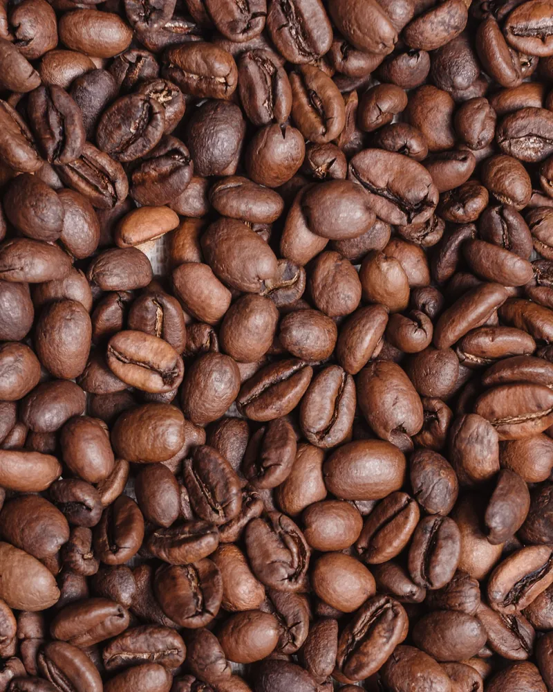
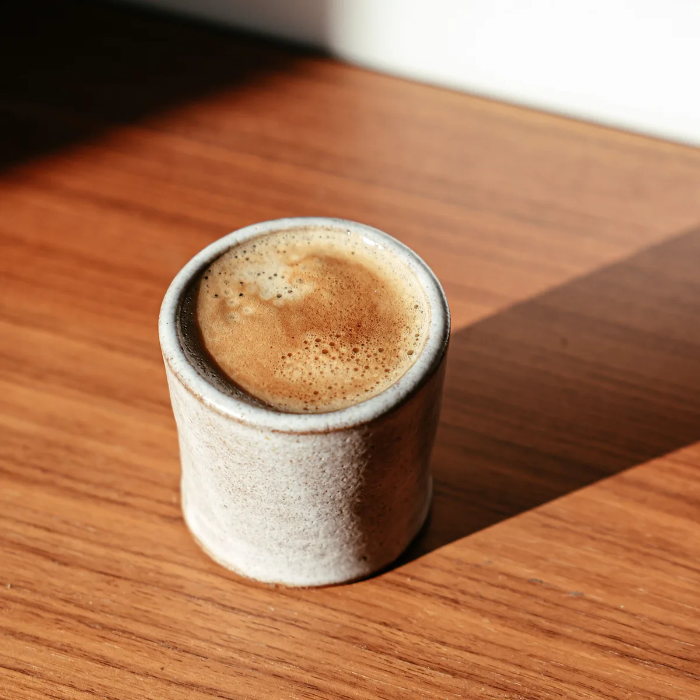
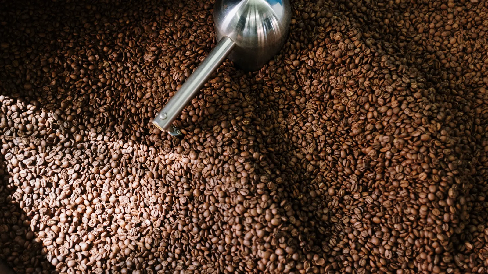
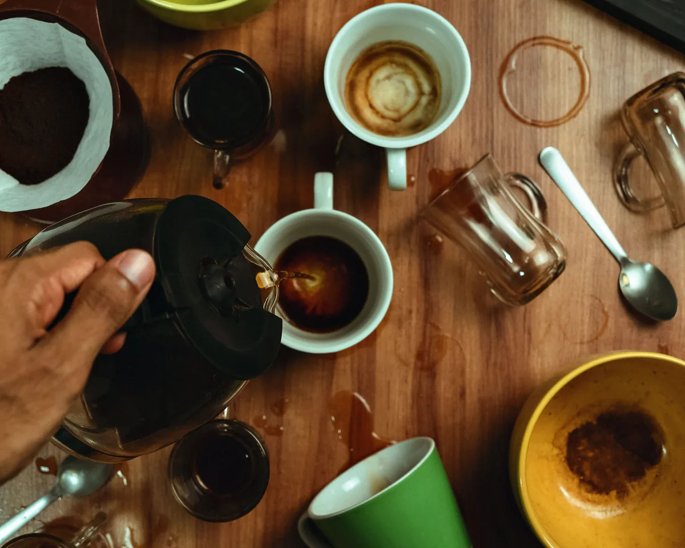
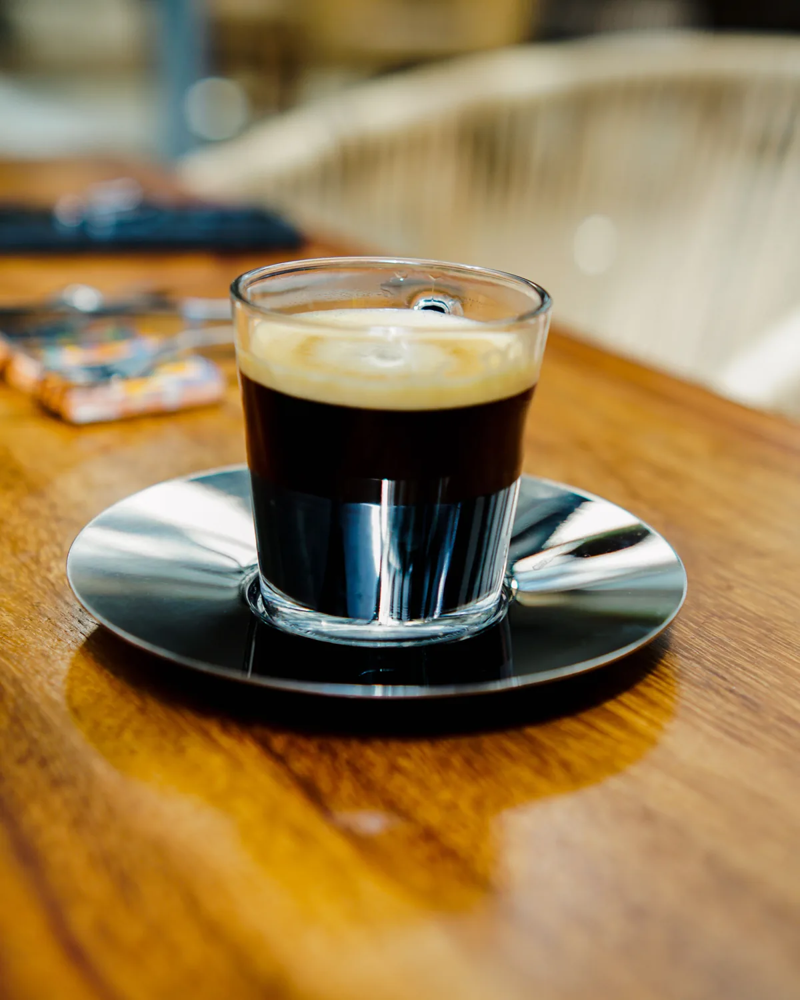
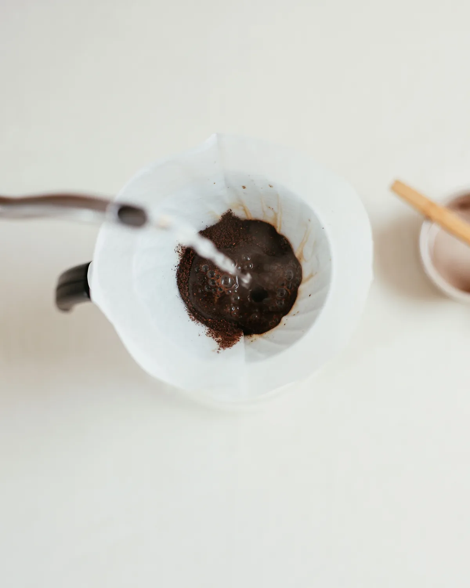
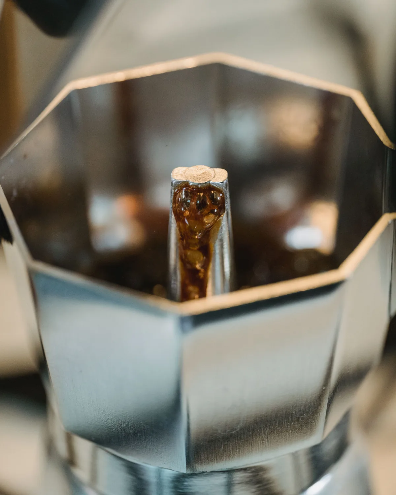

Pražené v utorok. U vás vo štvrtok.
Ako ju máte radi? Svetlá a ovocná, alebo tmavá a čokoládová.
Kolumbia Huila
Malina, karamel a mliečna čokoláda
Na filter alebo aj na espresso
13,50 € za 250 g
Malá pražiareň výberovej kávy v Bratislave. Šesť káv, každá vo vlastnom vrecku. Pošleme ich deň po pražení, od 45 € s dopravou zadarmo.

Šesť káv, šesť vreciek.
Každú pôvodovú kávu kupujeme od jednej farmy alebo družstva a pražíme ju na mieru jej chuti. Ceny sú za zrnkovú kávu, zomletie na filter, espresso alebo moku zvolíte v košíku zadarmo.
-
Svetlé Vaša chuť
Etiópia · Guji, Uraga
Etiópia Guji
Citrón, jazmín a čierny čaj. Ľahká a šťavnatá ako limonáda.
-
Stredne svetlé Vaša chuť
Kolumbia · Huila, Pitalito
Kolumbia Huila
Malina, karamel a mliečna čokoláda. Sladká, keď vychladne.
-
Stredné Vaša chuť
Guatemala · Huehuetenango
Guatemala Huehuetenango
Slivka, kakao a hnedý cukor. Plná, a predsa jemná.
-
Stredne tmavé Vaša chuť
Brazília a Guatemala · zmes
Zmes Kolotoč
Karamel, lieskový orech a mliečna čokoláda. Naša domáca, aj s mliekom.
-
Tmavšie Vaša chuť
Brazília · Cerrado Mineiro
Brazília Cerrado
Horká čokoláda, pražené orechy a melasa. Hustá ako z moky má byť.
-
Bez kofeínu Vaša chuť
Kolumbia · Huila, bez kofeínu
Večerná Kolumbia
Karamel, červené jablko a kakao. Káva aj o deviatej večer.
Všetky ceny sú s DPH. Vrecko má ventil a zips, káva je najlepšia do šiestich týždňov od praženia.

Káva domov každé 2 alebo 4 týždne.
Vyberiete si kávu alebo necháte výber na nás. Pošleme ju na druhý deň po pražení a doprava je pri predplatnom vždy zadarmo. Bez viazanosti: dodávku posuniete alebo predplatné zrušíte jedným e‑mailom.
Za dodávku 13,50 €
Pri „Prekvapte ma“ dostanete zakaždým inú kávu z ponuky, cenu účtujeme ako za Kolumbiu. Platí sa pri každej dodávke zvlášť.
Ako pražíme.
Pražič na 5 kg, dva dni v týždni, jedna várka za druhou. Každá káva má vlastný profil: teplotu, čas a chvíľu, keď ju vysypeme. Svetlé kávy vysypeme skôr, aby ostala ovocná kyslosť; tmavšie necháme dlhšie, kým nechutia po čokoláde.
- Várka
- 5 kg zelenej kávy, z nej asi 4,2 kg praženej
- Dni praženia
- utorok a štvrtok, odosielame na druhý deň
- Ochutnávanie
- každú várku v deň praženia na obed, až potom ide do vreciek


Príprava bez kurzu.
Tri spôsoby, ktoré doma zvládnete. Ak nemáte mlynček, kávu vám zomelieme presne na váš spôsob, stačí ho zvoliť v košíku.

Espresso
- Káva
- 18 g
- V šálke
- 36 g
- Čas
- 27 až 32 s
- Voda
- 93 °C
- Zomeľte jemne, tesne pred prípravou, a rovno utlačte.
- Púšťajte, kým v šálke nie je dvakrát toľko, čo v sitku.
- Tečie rýchlo a je kyslé? Zomeľte jemnejšie. Pomaly a horké? Hrubšie.
Odporúčame:

Filter
- Káva
- 15 g
- Voda
- 250 g
- Čas
- 2:30 až 3:00
- Teplota
- 94 °C
- Zomeľte stredne jemne, približne ako morská soľ.
- Zalejte 40 g vody a nechajte 30 sekúnd napučať.
- Zvyšok vody lejte pomaly v krúžkoch, do troch minút je hotovo.
Odporúčame:

Moka
- Káva
- 16 g
- Voda
- po ventil
- Plameň
- stredný
- Mletie
- stredne jemné
- Do spodnej časti nalejte horúcu vodu, kávu v sitku neutláčajte.
- Postavte na stredný plameň a nechajte veko otvorené.
- Keď káva začne prskať, odstavte a spodok ochlaďte pod tečúcou vodou.
Odporúčame:
Doprava a platba.
Čo objednáte do polnoci v pondelok alebo v stredu, upražíme hneď na druhý deň a odošleme nasledujúce ráno.
- Výdajné miesto alebo boxdoručenie do 2 pracovných dní
- 2,90 €
- Kuriér na adresudoručenie nasledujúci pracovný deň po odoslaní
- 3,90 €
- Osobný odber v pražiarnipripravené od 15:00 v deň praženia
- zadarmo
- Nákup od 45 € a predplatnéna výdajné miesto aj kuriérom
- zadarmo
- Platbakartou online, bankovým prevodom alebo na dobierku bez poplatku